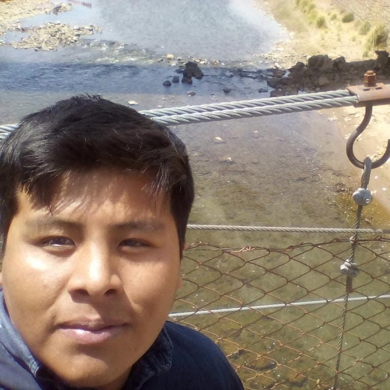

Alfredo Callizaya Gutierrez
Desarrollador Backend / Frontend - Educador Digital.
Programador backend / frontend, usuario Linux pythonista.
Apasionado por DevOps, amante de la programación en Python, siempre en modo crecimiento 😎
Formación Académica
- Técnico Superior en Sistemas Informáticos – INCOS, La Paz
- Egresado de Ciencias de la Educación – UMSA
- Diplomado en Fullstack Developer Backend y Frontend – Universidad Simón I. Patiño
- Diplomado en Desarrollo de Aplicaciones Web – UMSA
Experiencia Laboral
Xiberty (2017-2018)
- Testing y desarrollo de módulos de sitios turísticos y museos en Python/Django.
- Asistente virtual para consulta de votos y candidatos (OEP).
- API REST para emisión de certificados en SERECI – OEP.
- Chatbots en Facebook Messenger con PostgreSQL y Django.
AMPER SRL (2019)
- Desarrollo de sistemas en Laravel, PHP y MySQL.
- Páginas web institucionales y sistemas de cursos (CEMTIC, UPEA).
- Instalación y configuración de servidores (Moodle, VPS, Linux).
CEMTIC SRL (2018 - 2022)
- Desarrollo de página y sistema Web para el Posgrado UPEA, sistema desarrollado en Laravel, PHP, Bootstrap, CSS, HTML, MySQL; edición de imágenes y creación de videos institucionales.
- Diseño y desarrollo de página web institucional de la EMPRESA CEMTIC SRL, desarrollado en Laravel y PHP, con sistema de administración de cursos, roles de usuario, inscripción a cursos y envío de correos para confirmación de inscripciones.
- Instalación y configuración de servidores para FINRURAL, administración, capacitación, creación de manuales de usuario y personalización de la plataforma Moodle.
- Docente virtual de cursos de Laravel, Django, Python, Moodle, Diseño Web; elaboración de contenidos y recursos didácticos con h5p, exelearning, Photoshop, Lumi.
- Análisis, diseño y desarrollo de la página web de la carrera Ciencias de la Educación, UPEA; desarrollo de módulo con conexión a Moodle, gestión de cursos, gestión de notas, inscripciones, sistema desarrollado en Laravel, PHP, MySQL, Bootstrap 5, CSS, Livewire; asistente virtual desarrollado con API de Facebook; soporte técnico en entornos virtuales.
- Implementación de sistema de biblioteca virtual bajo la tecnología web, desarrollo de módulos de gestión de usuarios, roles, reportes; sistema desarrollado con Python y Flask.
- Instalación y configuración de servidores para BANCO UNION, administración, capacitación, creación de manuales de usuario, personalización de la plataforma Moodle, diseño de plataformas, creación de entornos virtuales, soporte técnico en entornos virtuales, diseño de recursos didácticos, instalación de extensiones en plataforma Moodle.
- Instalación y configuración de servidores para FUNDACION PROFIN, administración, capacitación, creación de manuales de usuario, personalización de la plataforma Moodle, diseño de plataformas, creación de entornos virtuales, soporte técnico en entornos virtuales, diseño de recursos didácticos, instalación de extensiones en plataforma Moodle.
- Instalación y configuración de servidores para la SPARKASSENSTIFTUNG LATINOAMERICA Y EL CARIBE, administración, capacitación, creación de manuales de usuario, personalización de la plataforma Moodle, diseño de plataformas, creación de entornos virtuales, soporte técnico en entornos virtuales, diseño de recursos didácticos, instalación de extensiones en plataforma Moodle.
- Migración de los módulos de un sistema académico a Laravel y PHP, con MySQL, Bootstrap, CSS, HTML5.
- Desarrollador Web Full Stack Backend PHP – Laravel, Python Django.
- Soporte técnico en desarrollo de webinars, transmisiones en vivo por RRSS, OBS.
- Diseño, edición de videos institucionales, afiches, administración de RRSS.
- Diseño de logo, línea gráfica, administración de RRSS y desarrollo de página web y sistema de juegos del proyecto FOFUEDUCA, sistema para la creación de juegos educativos para niños.
- Mantenimiento preventivo y correctivo de todas las computadoras.
INSO - Ministerio de Salud (2020-2023)
- Responsable del Área de Sistemas, desarrollo de página web institucional INSO para administración de actividades de la institución, cursos y servicios. Módulos desarrollados en Laravel, PHP, MySQL, Livewire, con gestión, instalación y configuración de servidores Linux y Apache.
- Informes y emisión de actividades dando continuidad al PISI, PISLEA, GOBIERNO DIGITAL, AGETIC.
- Diseño de módulos de gestión de Historias Clínicas, reportes, roles del Sistema de atenciones clínicas para exámenes preocupacionales, postocupacionales, radiatorias; sistema desarrollado en Laravel, PostgreSQL, PHP y Angular.
- Mantenimiento preventivo y correctivo de todas las computadoras.
- Responsable del Centro de Capacitación: desarrollo y diseño de cursos en modalidad presencial, semipresencial y virtual; gestión de participantes, emisión de certificados, diseño de contenidos y material audiovisual.
- Administración y gestión de contenidos para RRSS, edición de videos, grabación de videos, diseños de material promocional y afiches.
- Diseño de asistente virtual en Messenger para Facebook, desarrollado con API de Facebook Developers, Laravel y PHP/MySQL.
- Coordinación, planificación y ejecución del Primer Congreso Internacional de Ergonomía en Bolivia: diseño y edición de publicidad, creación de sistema de emisión de certificados y registro a cursos, coordinación virtual técnica con países como México, Chile, Ecuador, Colombia, España, China; exposiciones de profesionales, personalización y gestión del programa OBS para los streamings del congreso.
- Adición de resoluciones de rectificación y ratificación de notas, convalidaciones, rompimientos de pre-requisitos en la base de datos. Administración de redes inalámbricas, pantallas LED, gestión de actividades en línea (videoconferencias) y eventos de jornadas académicas.
- Participación en jornadas e implementación de estándares abiertos y manuales para el Gobierno Electrónico AGETIC.
- Análisis, diseño y desarrollo del sistema de envío de mensajes masivos por WhatsApp, sistema desarrollado con Python y Django, para generación y envío masivo de certificados de cursos y publicidad a usuarios.
- Instalación, configuración de servidores, administración, capacitación, creación de manuales de usuario, personalización de la plataforma Moodle, diseño de plataformas, creación de entornos virtuales, soporte técnico en entornos virtuales, diseño de recursos didácticos, instalación de extensiones en plataforma Moodle.
GESTORA (2024-2025)
- Administración y configuración de servidores Linux y VPS.
- Desarrollo de scripts en Python para automatización de tareas y reportes.
- Implementación de interfaces frontend con Vue 3 y Laravel.
- Capacitaciones técnicas en desarrollo web y administración de sistemas.
Certificaciones
- Curso de Django – DevCode (2018)
- Curso de Python para Todos – Coursera
- Linux Essentials – Cisco Networking Academy
- DevOps Fundamentals – Udemy
- Curso Git y GitHub Profesional – Netzun (2023)
- Curso de Python Intermedio – Netzun (2023)
- Expositor en FLISOL 2018, Arduino Day 2021, PyData La Paz 2019
- Hackaton BNB 2016 – Participante
Proyectos de Grado y Tesis Asesorados
- Modelo de minería de texto en WhatsApp para prevención de trata y tráfico (Python, NLTK, PostgreSQL).
- Implementación de impresora Braille con Arduino y Django.
- Sistema académico INCOS con Laravel, MySQL y bots.
Habilidades
- HTML5 / CSS3
- JavaScript / Node.js
- PHP / Laravel / Livewire
- Python / Django / Flask
- MySQL / PostgreSQL
- Git & GitHub
- Linux / Docker
- Moodle / H5P / OBS
- DevOps básico